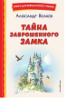

Серия «Книги для внеклассного чтения» — это подборка главных произведений русских и зарубежных авторов, входящих в школьную программу. Перед вами заключительная часть известной сказки Александра Волкова «Волшебник Изумрудного города». В последний раз Энни отправится на помощь к своим друзьям. Однако теперь в опасности всё человечество — на территории Волшебной страны, рядом с заброшенным замком Гуррикапа, приземлились инопланетяне. Цель у них воинственная: захватить Землю. Героям необходимо отстоять свой дом, чтобы не оказаться во власти инопланетных захватчиков.